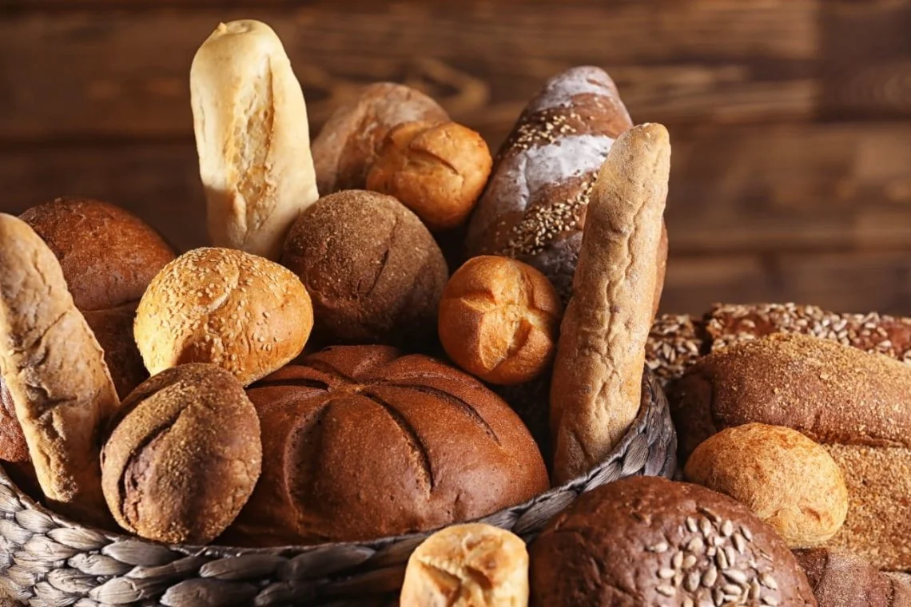

Roti Cheers Up Bakery
Selamat datang di Cheers Up Bakery, tempat di mana kebahagiaan hadir dalam setiap gigitan. Kami berawal dari sebuah impian untuk menyediakan roti berkualitas tinggi yang tidak hanya memuaskan selera, tetapi juga membawa kebahagiaan bagi setiap orang yang mencicipinya.
Jam buka : Senin - Sabtu (8AM - 9PM)
Alamat : Jl. Pahlawan, Karanganyar, Demak
“Toko Kami Berdiri sejak tahun 2010, Cheers Up Bakery berkembang dari toko roti kecil menjadi salah satu yang paling terkenal di kota, dikenal dengan berbagai macam roti segar yang selalu baru dipanggang setiap hari.
Sejak pertama kali membuka pintu toko kami, kami berkomitmen untuk memberikan yang terbaik kepada pelanggan kami. Dengan menggunakan bahan-bahan pilihan, teknik memanggang tradisional yang telah dipelajari selama bertahun-tahun, serta sentuhan inovasi dalam setiap resep, kami menghadirkan roti dengan rasa yang tak tertandingi. Kami percaya bahwa setiap roti yang kami buat adalah karya seni yang dapat dinikmati oleh semua kalangan.
Roti kami terbuat dari bahan-bahan alami terbaik yang dipilih dengan cermat oleh para ahli pembuat roti kami. Mulai dari roti tawar klasik, roti manis, croissant lezat, hingga roti gourmet yang lebih eksperimental.
Setiap jenis roti yang kami tawarkan adalah hasil karya yang dibuat dengan penuh dedikasi. Kami tidak hanya berfokus pada rasa, tetapi juga kualitas dan keaslian dari produk kami, yang membuat pelanggan kembali lagi dan lagi.
Di Cheers Up Bakery, kami juga senantiasa berinovasi dengan memperkenalkan varian roti yang sesuai dengan tren dan permintaan pasar. Dengan resep-resep baru yang diracik oleh tim ahli roti kami, kami terus berusaha menciptakan pengalaman kuliner yang baru dan menarik bagi pelanggan setia kami.

“Kami ingin menjadi tempat yang tidak hanya dikenal sebagai toko roti, tetapi juga sebagai tempat berkumpul, berbagi kebahagiaan, dan menciptakan kenangan manis bersama orang-orang terdekat.
Kami bangga akan perjalanan panjang kami dan berharap dapat terus berbagi kebahagiaan melalui roti yang kami buat. Terima kasih telah menjadi bagian dari perjalanan kami dan terus mendukung Cheers Up Bakery.
Kami memegang teguh semangat inovasi dan keterampilan tradisional. Tim kami secara rutin menghadiri pelatihan dan kursus untuk memastikan bahwa Cheers Up Bakery tetap menjadi pelopor dalam dunia bakery modern. Mulai dari roti klasik hingga kreasi eksperimental, kami berkomitmen untuk menciptakan pengalaman rasa yang tak terlupakan.